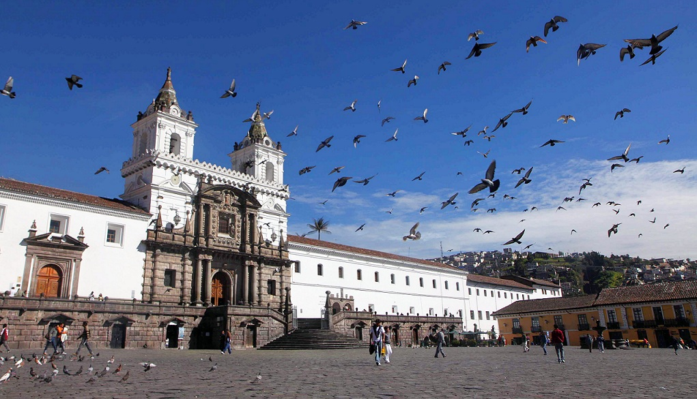
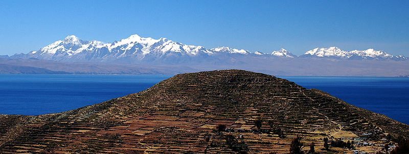

Ecuador , officially the Republic of Ecuador , is a representative democratic republic in northwestern South America, bordered by Colombia on the north, Peru on the east and south, and the Pacific Ocean to the west. Ecuador also includes the Galápagos Islands in the Pacific, about 1,000 kilometres (620 mi) west of the mainland. The capital city is Quito, while the largest city is Guayaquil..
The flora and fauna of the Ecuadorian highlands is a reflection of the mountainous territory characteristic of this area. Among the main plants are orchids and bromeliads, and the most common animals are the condor, the puma and the Andean weasel The plant that dominates the flora of the area is the frailejón, given that the climate of the páramo of the mountain range of Ecuador is cold and humid, and its flora must adapt that habitat.
In the same way, it is also possible to find other plants throughout this mountainous area; such is the case of the following:
Orchids Bromeliads Asteraceae Poaceae Araliaceae Escrofulariáceas Rosaceae

The Republic of Ecuador is a South American country that borders Colombia, Peru and the Pacific Ocean. It is located on the terrestrial equatorial line, so its extension occupies both hemispheres. Consequently, its latitudinal position gives it a varied climate, although mostly tropical. This country divides its extension into four major geographical regions : the coast or coastline, the sierra or interandina, the eastern or Amaz onian region and the insular region or Galapagos.
Before explaining the characteristics of the flora and fauna of the Ecuadorian highlands it is important to know other particularities of the area that influence the set of plants and animals typical of the region.
THE FLORA AND FAUNA OF LA SIERRA
The Andes of Ecuador are known for their majestic snow and active volcanoes with warm waters and surrounded by extensive vegetation, rainforests and fertile lands, colorful indigenous markets, beautiful colonial towns, ancient haciendas and historic cities, all under a spectacular blue sky and clouds playful that can only be admired in the mountains of this latitude.
The Andean region of Ecuador is the most visited in the country, due to its cultural diversity. Cities and towns of historical interest and importance as Quito, Cuenca, Baños, Riobamba, Loja, Vilcabamba, Ambato and artisanal sites such as Otavalo, Salasaca and Tigua are located in the Sierra region.
Some national parks with an abundant variety of flora and fauna protect an important area of the mountains.
Cotopaxi National Park, Llanganates National Park, Cotacachi Cayapas Ecological Reserve, El Angel, Cayambe-Coca, Los Ilinizas, Antisana, fauna of the Chimborazo reserve, protected forest of Pichincha, Mindo-Nambillo, Pasochoa and the botanical reserve of Pululahua
This region has great climatic diversity: páramos, temperate regions, abirgadas and dry zones, desert zones and subtropical regions. This last climatic floor produces a high amount of sugarcane. The main products that are sown are: dry beans, dry beans and dry soft corn, also dry grass suitable for livestock. We can also find important deposits of silver, copper, lead, zinc and marble quarries. In the subtropical zones there are humid forests, in which you can find ferns. lichens and moss.
There are still small protected natural forests. In the sectors of temperate floor, almost all the spaces of land have been destined for the culture of cereals, fruits and legumes, in these sites, it is possible to be observed great quantity of haciendas, farms, plots and ranches. In the colder and higher areas, called páramos, you can find lots of grassland. The type of animals also depends on weather conditions, although there are some that are common to all regions, such as dogs, cats, chickens , ducks, enter others. Subtropical Enclima, that is, in the lower lands of the inter-Andean region, there are cattle, horses, pigs and mules. Among the reptiles, you can find snakes and lizards. In temperate climate, it is common to find the former and also, sheep and goats. In cold weather, up to a certain height, you can find llamas, birds such as blackbirds, curiquingues, vultures, among others. In the great heights of the Cordillera de los Andes, you can still see some condors this animal is in danger of extinction
Enclima Subtropical, es decir en las tierras más bajas de la región interandina, hay ganado vacuno, caballar, porcino y mular. Entre los resptiles, se puede encontrar culebras y lagartijas. En clima templado, es común encontrar los anteriores y además,ganado lanar y caprino. En clima frio, hasta cierta altura, se puede encontrar llamas, aves como mirlos, curiquingues, buitres, entre otros.
En las grandes alturas de la Cordillera de los Andes, todavía se puede divisar algunos cóndores este animal está en peligro de extinción.